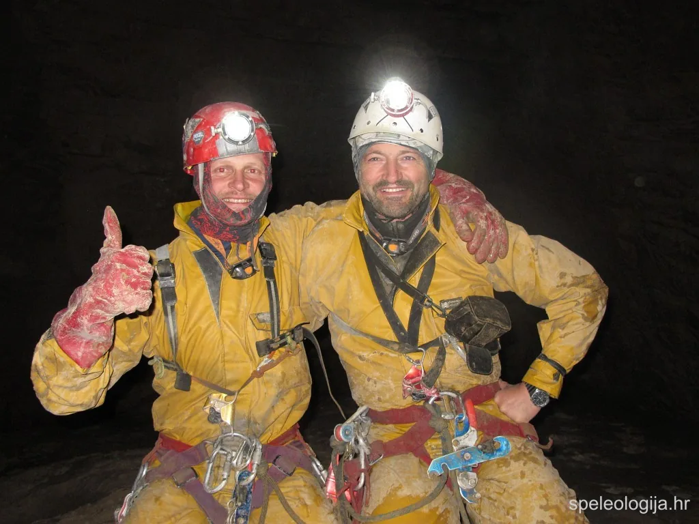

Voronya 2009.
U razdoblju od 23. listopada do 18. studenog 2009. godine članovi speleološkog odsjeka PDS Velebit, Komisije za speleologiju HPS i članovi HGSS Robert Erhardt i Darko Bakšić sudjelovali su na ekspediciji u najdublju…

U razdoblju od 23. listopada do 18. studenog 2009. godine članovi speleološkog odsjeka PDS Velebit, Komisije za speleologiju HPS i članovi HGSS Robert Erhardt i Darko Bakšić sudjelovali su na ekspediciji u najdublju jamu svijeta Voronyu (-2191 m).
Ekspediciju je organizirao međunarodni speleološki tim CaveX pod vodstvom Denisa Provalova i Olega Klimčuka. Cilj ekspedicije bio je proširivanje jednog bočnog kanala na dubini -1980 m kojim bi se zaobišao sifon Kvitočka. Time bi se omogućilo jednostavnije prebacivanje ronilačke i ostale opreme do sifona „Dva Kapitana“ gdje se planira nastaviti s istraživanjima tijekom 2010. godine.
Petnaestočlana ekipa iz Rusije, Ukrajine, Mađarske i Hrvatske postavila je bazni logor, spustila nekoliko stotina kilograma opreme na dubinu -1980 m i nastavila s proširivanjem spomenutog kanala. Ovaj kanal već je proširivan tijekom ljetne ekspedicije u trajanju 8 dana, a na ovoj ekspediciji 6 dana. Ostalo je još 2 do 3 dana posla kako bi se proširio kompletan kanal i time omogućio nesmetan transport opreme. Nastavak proširivanja planiran je za kraj siječnja ili kolovoz 2010. godine što ovisi o vremenskim prilikama i financijskim sredstvima.
Tijekom ekspedicije Robert Erhardt i Darko Bakšić snimili su dosta fotografskog i filmskog materijala, te se spustiti ispod 2000 m dubine, odnosno do dvorane Game Over koja se nalazi na -2080 m.
DOPUNA: Od 2018. godine jama Voronya - Krubera (-2197 m) nije više najdublja na svijetu već je titulu preuzela jama Veryovkina sa dubinom od -2212 metara. Zasluga za ovaj uspjeh ide speleolozima moskovskog speleološkog kluba Perovo. Jama Veryovkina nalazi se u Arapskom masivu zapadnog Kavkaza, na teritoriju Gruzije. Zanimljivo, na tom se području nalaze čak četiri najdublje jame na svijetu. Moskovski speleolozi istražuju ovo područje još od 1982. godine, a u jami Veryovkina istraživanja su se intenzivirala 2015., da bi u ožujku 2018. dosegnuli trenutno najveću dubinu na svijetu. Jama Veryovkina drži još jedan nevjerojatan rekord, u njoj se može, bez korištenja ronilačke opreme, spustiti do dubine od 2151 metar. Jama je do 1986. nosila oznaku P1-7, a tada dobiva ime po speleologu Aleksandru Veryovkinu koji je preminuo 1983. godine roneći u sifonu špilje Su-Akan koja se nalazi na ruskoj strani Kavkaza. Aktualni popis najdubiljih jama na svijetu nalazi se na ovoj listi: http://www.caverbob.com/wdeep.htm
MORFOLOŠKI OPIS DIJELA VORONYE OD ULAZA DO DVORANE GAME OVER
Ulazna vertikala ima 57 m. Iz nje se uskim meandrom, u kojem su tri kraća skoka, prolazi do vertikale od 115 m. Vertikala završava dvoranom. Zatim se prolazi kroz uski meandar i ulazi u vertikalu od 43 m. U gornjoj trećini vertikale postavljena su dva užeta. Jedno vodi u meandar Krim i dalje prema dnu Voronye, a drugo u dio nazvan Nonkjubiševskaja. Meandrom Krim prolazi se do vertikale od 110 m. U vertikali su također na jednom mjestu postavljena dvostruka užeta, koja se nakon 40-ak m spajaju u prečnici. Odavde dalje ide jedno uže do meandra Mozambique. Meandar Mosambique ima karakterističan oblik ključanice. Meandar završava u najprostranijoj i najvećoj vertikali od 152 m. Dno vertikale završava na -500 m u dvorani u kojoj se ranije bivakiralo. Odavde se ulazi u meandar Sinusoida. Obilježje ovog meandra je izrazito meandriranje i u vertikalnom i u horizontalnom smjeru. Hoda se uglavnom po dnu meandra kojim potiče vodeni tok. U meandru se vide i tragovi hodanja na višoj razini koji se koristi za vrijeme veće vode. U meandru ima nekoliko kraćih skokova od 8 m, 19 m i 26 m. U jednom dijelu na meandar se spaja dolazni meandar nazvan Lamprechtsofen.Tako je nazvan jer se u njemu popelo od – 570 m do -359 m. Meandar Sinusoida završava prostranim vertikalama od 22 m i 71 m (Pti Drju). Dno vertikale Pti Drju nalazi se na -700 m. Tu se nalazi prvi bivak u kojemu mogu boraviti 3 do 4 osobe. Voda se nalazi odmah iza bivka.Od -700 m do -1100 m ima znatno više vode. Svaka vertikala je slap, tako da ovaj dio jame obiluje sidrištima, prečnicama i devijatorima. U kolovozu, kad se također organiziraju ekspedicije, u podzemlju je znatno više vode pa ovaj dio jame mora izgledati doista spektakularno. Redoslijed vertikala od bivka na -700 m do bivka na -1215 m preuzet je s nacrta i slijedi: 24 m, 45 m, 43 m, 40 m, 40 m, 49 m, 40 m, 28 m, 33 m i 71 m, a od bivka na -1215 m do bivka „Sandy beach“: 22 m, 21 m, 21 m, 10 m, 29 m i 23 m. Na dubini oko 1000 m voda se gubi. Ovaj dio je u brečama sve do bivka na 1215 m. Bivak na -1215 m nalazi se u rubu prostrane dvorane i više se ne koristi. Nastavlja se dalje prema bivku na -1410 m. Neposredno prije bivka jedna je vertikala u kojoj se prolazi u neposrednoj blizini slapa. Da slap ne bi špricao po speleolozima postavljen je komad tende kojim se skreće vodeni tok. Bivak na -1410 m je najprostraniji. Izgrađen je od konstrukcije i folija. U njemu može boraviti 10 do 12 speleologa. Voda se ne nalazi neposredno uz bivak već je po nju potrebno otići kroz jedno zarušenje i spustiti se u meandar. Voda se puni u nepropusnu vreću koja se nalazi u transportnoj te se tako nosi do bivka.
Na bivku „Sandy beach“ stalno se nalaze i „hidrokostimi“ – suha odijela s otvorom na trbuhu kroz koji se ulazi u odijelo, a zatim ga se zatvara komadom gume poput crijeva s karabitom. Hidrokostimi se oblače na bivku „Sendy beach“ te se spušta prema prvom sifonu. Do sifona se prolazi kroz kratki meandar, a zatim niz vertikale od 17 m i 12 m. Sifon 1 nalazi se na -1440 m. U zimskom razdoblju, kad je voda niža kroz sifon se roni na dah. Duljina sifona je 3 m, a dubina između 1 m i 0,5 m. Po ljetu se sifon roni s malim bocama jer mu je duljina oko 6 m. Sva oprema transportira se kroz sifon tako da se transportne potope i povuku užetom. Nakon sifona spušta se još dvije vertikale „Second life“ od 35 m i „Everest“ od 12 m, te se tu konačno skida hidrokostim. Vrlo brzo dolazi se do meandra u kojem je najuži dio jame koji na sreću nije predug. Prolazi se kroz dio „Shining meander“. To je prelijepi, koljenasti dio u kojem protiče dosta vode. U vapnenačkim stijenama uočavaju se proslojci rožnjaka. Od vertikale „Everest“ do KSS bivka na -1640 m treba se spustiti preko vertikala od 15 m, 25 m, 15 m, 18 m, 30 m, 5 m i 18 m. U bivku KSS može boraviti 6 speleologa. On se nalazi na mjestu gdje se jama račva i ide prema „Blue sump“ i dio jame koji vodi na dno. U neposrednoj blizini bivka nalazi se voda od koje se treba popeti kroz mali prolaz u stijeni i nastaviti dalje u dubinu jame. Ovaj je prolaz lako previdjeti jer je logičnije produžiti kanalom prema „Plavom sifonu“.
U malom prolazu kod bivka KSS odmah se počne s puzanjem, zatim slijede kratki skokovi i između -1640 do -1700 m dolazi se u dio nazvan „Way to the dream“. Provlačeći se na boku i ležeći u vrlo plitkoj vodi slijedećih 60-ak metara. Dimenzije kanala ponovo se povećavaju. Jama se koljenasto spušta, a na nekim mjestima su lijepi vrtložni lonci i sigovina. Stijene su tamne, vapnenačke, mjestimično prošarane bijelim žilama kalcita. Na -1970 m dubine dolazi se na bivak Peremička. Ovaj bivak nalazi se točno po sredini kanala u dijelu Rebus i u njemu ima mjesta za 4 speleologa. Da bi se prošlo do dijela jame nazvanog „Game Over“ doslovno treba proći kroz bivak. Slijede dvije vertikale, od kojih veća ima 40 m i nazvana je Millenium jer se u njoj prelazi magična brojka od -2000 m. Od -2060 m do -2080 m prolazi se 100 –injak m niskim kanalom čije stjenke su prekrivene glinom. Skok od 20 m završava u dvorani nazvanoj Game Over na dubini -2080 m. Tragovi u jami upućuju na dizanje razine vode od -2080 m do -1960 m. Neposredno prije bivka Peremička odvaja se kanal koji vodi prema sifonu Kvitočka. Dalje se kroz još dva sifona Podnir (-2010 m) i Unitaz (-2070 m) na dubini od -2140 m dolazi do sifona Dva kapitana. Sifon se spušta do točke gdje je dosegnuta do sada najveća dubina u jami Vorony -2191 m.
DNEVNIK EKSPEDICIJE
23.10.2009. petak
Oko 12 sati dolazimo na aerodrom Pleso. Robi i ja svaki imamo po 40 kg opreme. Šarmiramo službenice na prijemu prtljage i obećavamo kako ćemo se pretvarati da je naša ručna prtljaga od 18 kg lagana. Nositi ćemo je sa smiješkom. Polijećemo u 14:10 sati. Let do Moskve bio je udoban. Slijećemo oko 19 sati. Let traje 3 sata, ali je vremenska razlika +2 sata.
[caption id="attachment_3596" align="alignnone" width="1024"] Moskva noću. Foto: Darko Bakšić[/caption]Ostavljamo prtljagu u čuvanom prostoru aerodroma Šeremetjev i kupujemo karte za vlak do stanice „Bjeloruskij vagzal“ gdje stižemo nakon 35 minuta vožnje. Kratko čekamo Denisa Provalova i djevojku Juliju kod koje trebamo prespavati. Julija je studentica sociologije i ima 22 godine, vedra je i gostoljubiva.
Denis ima 40 godina, simpatičan je i malo užurban. Ima konstituciju trkača. Priča nam kako se Moskva u posljednjih 15 godina jako promijenila. Puno se gradi, nestale su brojne zelene površine, a priljev doseljenika je ogroman. Većina ih je ilegalnih pa se ne zna stvarni broj stanovnika. Procjenjuje se da Moskva danas ima preko 20 milijuna stanovnika. Vozimo se opet na drugi kraj grada gdje se nalazi Julijin stan Njena se obitelj prije nekoliko godina doselila u Moskvu s područja Bajkala. Ona živi sa sestrom Katjom, a roditelji žive i rade izvan Moskve. Zgrada je lijepo uređena kao i stan, a do njega ima bezbroj vrata koja se zaključavaju. Obje sestre već su bile u Vorony, Julija na -700, a Katja na -1440 m. Katja češće špiljari i odlazi na ekspedicije dva do tri puta godišnje.
24.10.2009. subota
Julija odlazi na faks, mi doručkujemo i čekamo Denisa. Oko 11 sati dolazi Julijina majka i iznenađena zatiče nas dvojicu u stanu. Dobro smo prošli, da je došao otac general bilo bi skakanja s 15 kata. Denis i njegova supruga Ženja (Eugenija) dolaze po nas i odlazimo na aerodrom. Denis putuje s nama. Polijećemo iz Moskve za Soči u 14:10 sati. U Sočiju nas je iznenadila ugodna temperatura od 23 °C. Dočekao nas je Vasja (Vasilij Maškov) carinik koji živi u Sočiju, odnosno dijelu koji se zove Adler. Denis nam priča kako Vasja ima predivnu kćer Olju staru 20 godina za kojom pate brojni speleolozi koji dolaze na Arabiku. Nakon večere Vasja nas vozi do granice koju uz njegovu pomoć prelazimo vrlo brzo. Slijedi prijelaz pješice sa svim stvarima mostom preko rijeke Sou. Na granici Abhazije Denis uvjerava carinike da imamo sve potrebne dozvole i vize pa nas nakon pregovaranja puštaju pod uvjetom da na izlasku donesemo vize. Po vize moramo ići u grad Suhomi do kojeg ima 2 sata vožnje. Konačno prelazimo u Abhaziju, iznajmljujemo taksi do prve birtije gdje nas čeka prvi dio ekipe. Nakon upoznavanja i večere odlazimo u kuću koja je godinama glavna baza za speleološke ekspedicije na Arabici. Sjedimo s našim novim prijateljima iz Rusije, neki su došli čak s Urala i iz Sibira.
25.10.2009. nedjelja
Oko 2 sata u noći probudio me naš cimer Vlad koji je hrkao poput sibirskog medvjeda. Vadim vreću i prostirku iz ruksaka i odlazim spavati na dvorište. Robi unatoč svemu spava snom pravednika. Nije mi jasno kako mu to uspijeva dok ga ujutro nisam vidio kako vadi čepiće iz ušiju. Moja vreća je pretopla pa sam jedva dočekao jutro.
Denis ujutro odlazi po Klima (Oleg Klimčuk) i ostalu ekipu Ukrajinaca, jedan dio ekipe ide po hranu u Soči, a Robi i ja obzirom da nemamo vize na plažu. Plaža nas nije posebno impresionirala. Duga pjeskovito – šljunčana obala. Mjesto u kojem se nalazimo zove se Gentijadi (drugo ime mu je Candripš), prilično je neuredno i zapušteno. Po dolasku Provalov i Klim rade plan istraživanja u Voronji, a mi pakiramo karabit u gumena crijeva. Kasnije im se pridružujemo na plaži i kupamo u Crnom moru.
Kad smo se svi okupili počeli smo pakirati hranu za jamu. Sve je pomno i pedantno isplanirano. Sva hrana je podijeljena po obrocima i po bivcima, a prema broju ljudi koji će boraviti u njima. Dajemo po 500 eura za pokriće troškova ekspedicije.
Za kasni ručak imali smo boršč. Kao i kod Velebitaša čeka se dok se hrana pripremi, svi se skupe i onda se jede zajedno. Ugodno me iznenadilo to što se alkohol konzumira u minimalnim količinama. Tek jedno pivo ili čaša vina. Već u 22 sata svi odlaze na spavanje.
26.10.2009. ponedjeljak
Valerij je ustao već oko 5 sati, čuo sam ga kako ronda po blagovaonici iznad terase na kojoj sam spavao. Osjetio sam vjetar na licu i pomislio da se mijenja vrijeme. Ustao sam oko 7 s prvim zrakama sunca. U blagovaonici me simpatični debeljuškasti Valerij nudi kavom i govori kako je kod njega u Sibiru već podne i da se zbog toga rano budi. Tek sat kasnije ustaju ostali. Klim i Provalov odlaze trčati, a Vlad pije čaj. Ove noći ni Robi nije mogao spavati zbog njegovog hrkanja. Čak mu ni čepići u ušima nisu pomogli.
Vlad je zaljubljen u telekomunikacijske uređaje. U torbici oko pojasa ima poredane radio stanice, mobitele i satelitski telefon.
Provalov je profesor tjelesnog odgoja. Sudjeluje u projektu u kojem ispituju zdravstveno stanje i pripremljenost ljudi u ekstremnim uvjetima pa nam je objasnio da će napraviti mjerenja prije, za vrijeme i nakon ekspedicije.
Unajmljenim terenskim vozilom UAZ, zajedno s Klimom i Vladom, odlazimo dan prije prema jami. Dva i pol sata vožnje više sliči gimnastici jer gibanjem tijela kompenziramo opasna naginjanja vozila. Nakon pojasa bukovo-jelove šume na takozvanim Vratima Arabike počinje alpska zona.
Od kraja onoga što je ostalo od ceste do logora ima još oko sat hoda. Logor je na oko 2200 m nadmorske visine i prilično je hladno. Postavljamo kuhinju, šatore i odlazimo po još dvije runde stvari.
27.10.2009. utorak
Još jedna jutarnja tura nošenja i jedan dio potrebnih stvari je u logoru. Robi i ja zavirili smo u obližnju špilju Ž13 i u njoj našli gomilu stvari od prijašnjih ekspedicija. Ona im služi kao spremište i zaklon.
Podigli smo veliku baznu tendu preko postojeće drvene konstrukcije koja je ostala od ljetne ekspedicije. Ostatak ekipe dolazi kamionom oko 15.30 sati. Odlazimo im pomoći u transportu opreme. Konačno smo svi na okupu, došli su i mađarski speleolozi koji su zakasnili na vlak i zbog toga došli dan kasnije. U još dva navrata podižemo opremu do logora. Nakon toga družimo se u baznom logoru uz čaj i hranu, te već u 21 sat odlazimo na spavanje.
28.10.2009. srijeda
Jutarnja gimnastika uz nošenje stvari. Meni je to već šesta tura.Ulaz u jamu Voronya nalazi se oko 150 metara od logora na nadmorskoj visini od 2256 m. Oko 13:30 sati počinjemo ulaziti u Voronyu. Prvi ulaze Miša i Vasja koji pregledavaju užad i sidrišta te popravljaju ako je nešto potrebno. Svi ostali nose po jednu tešku transportnu do meandra Krim na -240 m, a mi uz put i snimamo. Na povratku Robi i ja ostajemo zadnji radi fotografiranja od kojeg ubrzo odustajemo jer se zbog isparavanja iz naših žutanjaka sve zamaglilo. Na izlasku oko 19 sati dočekala nas je kiša i vjetar. Večeramo, punimo baterije, prebacujemo fotografije i dogovaramo se za sutra.
[caption id="attachment_3622" align="alignnone" width="1024"] Ulaz u Voronyu i kamp u pozadini[/caption]29.10.2009. četvrtak
Cijelu je noć lijevala kiša, sijevalo je i grmilo, a pred jutro je okrenulo na snijeg.
Provalov, Klim, Miša, Kajo, Attila i Denes ulaze u Voronyu oko 10 sati. Odlaze na 700 m dubine i tamo postavljaju bivak.Ostali čiste snijeg sa šatora i odlaze na mjesto istovara opreme kako bi još jedan dio opreme donijeli do logora.Ekipa iz jame izlazi oko 20 sati, sve su odradili, samo telefon nije proradio. Pripremamo željezne šipke za uzemljenje obzirom da telefon koristi samo jednu žicu. Razvedrilo se i noć je bila prekrasna s mjesečinom.
30.10.2009. petak
Buđenje, dogovor i konačno oko 13 sati u Voronyu ulaze Provalov, Miša, zatim Dima, Dima i Vasilij. Oni od ulaza do meandra Krim svi nose po jednu transportnu vreću. Na meandru Krim uzimaju dodatno još tri vreće koje ostavljaju ispred meandra Sinusoida na -500 m dubine.
Robi i ja ulazimo nakon njih. Od ulaza nosimo svaki po dvije vreće jer još nosimo kameru, rasvjetu i nešto dodatne odjeće. U meandrima nam to znatno otežava situaciju. Putem snimamo.
Nakon silaska na bivak na -700 m; Provalov izlazi van, Miša, Dima, Dima i Vasja nastavljaju prema bivku „Sandy Beach“ na -1410 m, a Robi i ja se vraćamo još po tri transportne vreće koje su ostavljene ispred meandra Sinusoida na -500 m. Oko 22,30 sati dolazimo ponovno u bivak na -700 m. Kuhamo i istovremeno sušimo uz benzinska kuhala nakon što smo se upoznali s njihovim radom što je skoro završilo spaljivanjem bivka.
31.10.2009. subota
Skuhali smo tjesteninu i „bakinu kašu“, popili puno čaja i primili upute iz baze na površini. S bivka na -700 m moramo se vratiti na -240 m u meandar Krim po dvije transportne vreće i spustiti ih na -1410 m u bivak Sandy beach. Mađari s površine spuštaju transportne do -1410 m, a ostatak ekipe koji je već na -1410 m penje po transportne na -700 m. „Sveopća selidba“ po jami.
Mađare srećemo malo ispod meandra Krym na oko -300 m. Zajedno nosimo transportne do -700 m, gdje nalazimo ekipu koja je upravo došla s -1410 m. Kratko odmaramo, kuhamo čaj i svi krećemo prema bivku „Sandy Beach“. Mađari i mi snimamo uz put. Učestalo vađenje kamere uz stalno prebacivanje i nošenje dvije teške transportne vreće kompliciran je manevar koji prilično zamara.
Kako mene, tako i ostale jer ih stalno zaustavljam. Srećom ekipa ima razumijevanja i strpljenja. Dosta kadrova mogu snimiti uz osobnu rasvjetu jer svi imaju Scurione.
Nisam baš zadovoljan, ali snimanje u ovoj akciji nije prioritet pa se moramo zadovoljiti samo s usputnim snimanjem. Iza ponoći stižemo u bivak Sandy beach. Vasja ima rođendan pa slavimo s gutljajem konjaka i mađarskog pelina Unicum, te liježemo tek oko 4 sata.
[caption id="attachment_3635" align="alignnone" width="1024"] Bivak Sandy Beach na -1410 m[/caption]1.11.2009. nedjelja
Ustajemo oko 8 sati. Nismo se baš naspavali. Robi i ja pridružujemo se Miši, Dimi, Dimi i Vasji i s njima ćemo kroz prvi sifon na -1440 m, a Mađari se vraćaju na -700 m.
[caption id="attachment_3636" align="alignleft" width="300"] Gydrokostjum[/caption]Polako se spremamo. Morao sam zamijeniti koloturu na novom stop desenderu jer se potpuno potrošila za samo 2000 m spuštanja. Kombinacija krutih 9 mm ukrajinskih užeta i blata na njima troši sprave na očigled. Srećom pa su Mađari sa sobom imali nekoliko rezervnih kolotura i spravica.
Doručak, čaj i dugotrajne pripreme oblačenja Gidrokostjuma – suhih odjela ispod žutanjaka ili kordura pa tek oko 14 sati krećemo prema sifonu. Nosimo svaki po dvije transportne vreće. Kratak menadar i spuštanje do sifona na -1440 m. U ovo doba godine dug je svega tri metra i dubok oko 1 m. Prolazi se na dah povlačeći po užetu. Leđima se struže po stijeni, a ronilačka maska se ne koristi jer se i tako ništa ne vidi. Dvojica Dima, koji su tu već doma, paze da svi prođemo sigurno kroz sifon. Na kraju smo kroz sifon provukli 12 transportnih vreća, pa se spustili jednu vertikalu gdje smo skinuli Gidrokostjume. Kod skidanja primjećujemo da smo nas trojica zamijenili čizme. Svi imamo isti broj, a čizme su iste pa nije čudo. Vrlo brzo slijedi jedno suženje gdje je nužno skinuti opremu sa sebe. Robi je ovo mjesto prošao „na izdah“.
[caption id="attachment_3644" align="alignnone" width="1024"] sifon Kvitochka -1980 m[/caption]Svi se spuštamo na bivak KSS na -1640 m. U njemu ima mjesta za šest osoba. Atmosfera je super.
Dečki pitaju Robija i mene: „Koliko Hrvatska ima stanovnika?“
Oko 4 i pol milijuna, odgovaramo.
Oni u čudu gledaju i ponovo pitaju: „Ma ne grad Zagreb. Hrvatska?“
Da, da Hrvatska, -smijemo se mi.
„Onda se vi svi poznate“, kažu dečki i svi ćemo u smijeh.
Večeramo. Na kraju kako je i prikladno u tim dubinama završavamo s kavijarom. U jamu su ušli i spustili se do bivka „Sandy Beach“ na -1410 m Provalov, Klim i Bazilej.
2.11.2009. ponedjeljak
Opet se nismo baš naspavali. Miša i Vasja odlaze po preostale vreće na -1480 m. Dima, Dima, Robi i ja spremamo se za bivak Peremička na -1960 m. Dime odlaze naprijed, a Robi i ja još ostajemo u bivku jer mi kamera ne radi. Odbija poslušnost javljajući da je došlo do kondenzacije vlage. Sušim kameru u nadi da će proraditi. Sat vremena kasnije, kamera je OK pa i nas dvojica krećemo.
Ubrzo dolazimo do kanala Way to the dream. Doista kao u snu, ali ružnom. Između -1640 m i -1700 m ulazi se u uski i niski kanal duljine oko 60 m. Kroz kanal se može proći samo s jednom transportnom. Prolazi se na boku, ležeći u vodi koja kroz rukave i nogavice žutanjka ili kordure natapa pododijelo. Doista jedinstven doživljaj. Transportna se vuče za sobom. Često zapinje pa ju stalno nogom treba postavljati u najpovoljniji položaj, a zatim povlačiti za uzicu.
Nakon toga dolaze kratke vertikale. Jama se koljenasto spušta. Izmjenjuju se kanali s vrtložnim loncima, sigovinom, slapićima. Snimamo. Robi ide čas ispred, a čas iza mene pa se izmjenjujemo u obaranju hrvatskog dubinskog rekorda: -1700, -1800 m …
Konačno dolazimo do bivka Peremička (-1960 m) gdje trebamo i prespavati. Dime nam objašnjavaju da nisu pronašli vreće za spavanje, već samo bivak. Poravnavamo dno kanala, postavljamo bivak i razmišljamo kako ćemo se snaći za spavanje. Nije velika frka jer imamo dovoljno benzina pa se ako treba možemo grijati i cijelu noć. Zovemo ekipu u KSS bivak gdje se nalaze Miša, Vasja, Provalov, Klim i Bazilej. Kratko razmišljaju o našoj situaciji i donose odluku. Provalov će donijeti dvije vreće na bivak Peremička i spavat će dolje s Dimama, a Robi i ja moramo natrag na KSS bivak. Robi i ja se gledamo. Nema problema, ali prvo ćemo na dno, tj. do dvorane Game Over jer tko zna hoćemo li dobiti slijedeću priliku za spuštanje.
U bivku Peremička uskoro će biti gužva. To je bivak samo za 4 osobe, a treba roniti i proširivati kanal. Dogovaramo se s Dimama. Oni nam svesrdno pomažu. Dima Vikorčuk nas vodi do sifona Kvitočka, dok Dima Fedotov postavlja uže do dvorane Game Over.
Žurimo, snimamo sifon Kvitočku, penjemo se ponovo do bivka, prolazimo kroz bivak i nastavljamo u kanal koji vodi do dvorane Game Over. Putem snimamo, fotografiramo i konačno u 22:40 sati stižemo u Game Over pjeskovitu dvoranu na -2080 m. Ostavljamo tragove na podu koje će voda uskoro izbrisati, baš kao i tragove svih onih speleologa koji su se ovdje spustili prije nas. Fotografiramo se s Dimom. HRVATSKI DUBINSKI REKORD.
SREĆA... ispunjenje jednog speleološkog sna. [caption id="attachment_3648" align="alignnone" width="1024"] Dvorana Game Over, -2080 m[/caption]Penjemo se natrag i raspremamo užeta do bivka Peremičke gdje je već stigao Provalov. Malo nam prigovara zato što ih nismo poslušali i odmah krenuli prema bivku KSS. Gledamo ga i smijemo se. Sve mu je jasno, vidi da imamo još dovoljno energije pa se i on smije.
Nije nam važno kad ćemo stići do bivka KSS. Tako se dobro osjećamo da nam ništa ne može pokvariti sreću. Ne smeta nam što ćemo se penjati slijedeća 3 sata, što ćemo se provlačiti kroz vodu, što već nekoliko dana nismo dobro spavali, što u KSS bivku nema dovoljno vreća za spavanje. Pa možda je čak i dobro da dođemo pred jutro jer će se vreće možda već isprazniti.
Pozdravljamo se s ekipom te veseli i zadovoljni krećemo gore.
3.11.2009. utorak
Za tri sata stigli smo u KSS bivak, pokušavamo se osušiti na kuhalima i pri tome budimo cimere. Oni samo komentiraju: „A, bratja Horvati“. Guramo se u njihove vreće. Robi kod Bazila i Vasje, a ja kod Klima i Miše. Opet slabo spavamo. Svega 3 sata.
U 8 sati telefonski se čujemo s površinom. Panično nam javljaju da je u dva dana palo 2 m snijega i da je velika opasnost od lavina. Jedna je lavina već srušila dio baznog šatora u kojem je sva hrana. Mali šatori su zatrpani snijegom kao i ulaz u jamu. Brza promjena plana: bratja Horvati moraju hitno van zajedno s Provalovom kako bi organizirali evakuaciju logora na sigurnije mjesto te izvidili put za silaz s brda. Ostatak ekipe ide do bivka Peremičke gdje će nastaviti po planu s proširivanjem kanala kojim bi se zaobišao sifon Kvitočka. Počinje trka s vremenom. Rošade po jami – kao partija šaha u kojoj smo mi samo pijuni u rukama majke Prirode. Ali složnost čini čuda i svi radiomo kao jedan usklađeni mehanizam. Dvojica Dime počinju s ronjenjem sifona Kvitočka, a pridružuju im se Klim i Bazil kako bi proširivali kanal s dvije strane. Vasja i Miša transportiraju opremu do -1960 m i vraćaju se na KSS bivak. Mađari se spuštaju iz bivka Sandy Beach s -1410 do KSS bivka na -1640 m, a mi im trebamo pomoći pri prolasku sifona. Na kraju dana svi smo na predviđenim mjestima, kotačići uredno posloženi. Prolaz sifona na -1440 m prema natrag još je neugodniji. Robi se čak morao još jednom vraćati natrag kroz sifon jer ja nisam shvatio da uže za povlačenje transportnih nije nigdje zavezano. Konačno smo došli u bivak „Sandy Beach“ otišli smo po vodu, posložili bivak i hranu i počeli kuhati. U bivku nam se uskoro pridružio i Provalov.
[caption id="attachment_3660" align="alignnone" width="1024"] Bazni logor kojeg je srušila lavina[/caption]Javljaju nam da je vani vrlo hladno i da sami ne mogu otkopati šatore. Vrlo je važno da po izlasku ljude dočeka dobro sklonište jer iscrpljeni i mokri na snijegu i hladnoći nemaju nikakve šanse za preživljavanje. Što nas čeka vani? Prvo kopanje izlaza iz jame, probijanje kroz snijeg do logora, iskopavanje šatora. Prebacivanje logora na sigurno mjesto od lavina.
Moramo se dobro odmoriti i naspavati za sve to.
4.11.2009. srijedaBuđenje, sladak okus uspjeha, ali još nije gotovo. Vani može biti jednako teško i opasno, pa čak i opasnije zbog lavina. Kuhamo čaj i raznu hranu. Provalov ide prvi s laganom transportnom kako bi što prije iz prve ruke procijenio situaciju na površini. Nas dvojica idemo sa po jednom transportnom vrećom na bivak -700 m. Tu se sušimo, popravljamo opremu, jedemo i spavamo.
5.11.2009. četvrtakUstajemo u 6 sati kako bi što prije krenuli. Nakon doručka sređujemo bivak kako bi iduća ekipa imala suho i uredno, pa oko 10 sati krećemo van. U meandru Sinusoida prestižem Robija, zadnjih 100 m prestaje mi raditi glavno svjetlo pa nastavljam s Tikom. Izlazim u 14 sati. Probijam se kroz snijegom zatrpan ulaz i čujem Provalova: Hej Darka! (tako me zovu). On je jučer za 5 sati i 45 minuta izašao sa 1400 m dubine. Pokušao je prokopati rukama ulaz, ali nije uspio. Vratio se na 60 m dubine gdje je uzeo metalnu šipku i pomoću nje za dva i pol sata probio rupu u snijegu i izašao iz jame.
Međutim snijeg je bio tako mekan da nije mogao hodati već je potrbuške gmizao do logora. Danas je došao na ulaz kako bi postavio uže po kojem se može doći do logora. Snijeg se već malo slegao pa je bilo lakše doći do šatora, ali brzo se pothlađujem. Naš šator je otkopan, pripremljen za doček. Ulazim u šator i presvlačim se, a Valerij mi donosi vrući čaj. Zahvaljujem mu i dajem mu lijep kamen iz jame. Presretni smo obojica. Robi dolazi nakon dva sata.
Logor je u rasulu. Glavni šator srušila je lavina, otkopavamo ga satima. Čuje se tutnjava lavina, vidimo ih na susjednim obroncima planine. Po noći ponovo pada snijeg pa po mraku premještamo naš šator na sigurnije mjesto.
U jami sve ide po planu. Na oko -2000 m ekipe se mijenjaju u proširivanju prolaza. Ispočetka proširuju s obje strane, ali moraju odustati jer je zrak između sifona Kvitočka i Podnir loš.
6.11.2009. petak
Tijekom noći se razvedrilo, pun mjesec je obasjao logor. Zahladilo je. Svanuo je prekrasan sunčan dan. Nakon doručka nastavljamo s otkopavanjem baznog šatora i malog mađarskog šatora koji se polomio pod snijegom. Od dijela konstrukcije baznog šatora radimo novu manju kuhinju u koju prebacujemo otkopanu hranu. Robi je uspio osposobiti agregat pa smo mogli puniti baterije raznih elektroničkih uređaja. Provalov je otišao do mjesta gdje su nas iskrcali iz kamiona i za to mu je trebalo preko tri sata. Čujemo se s ekipama u jami dva puta na dan. Mađari penju od -1410 na -700 m, svaki sa po dvije transportne vreće, a ekipa na dnu radi u smjenama 24 sata neprekidno.
7.11.2009. subota
Ponovno lijep dan. Sunce briše sve muke, brige i probleme. Ostaju u sjećanju samo lijepi trenuci. Izlasci i zalasci sunca na Arabici su prekrasni. Okruženi snijegom gledamo more.
Doručak kao i obično: svakom pet komada kobasice, dva komada sira i komad kruha. Obavezno vruća kava i čaj. Osmjeh i briga jedni za druge. Stvarno je dobra ova ekipa, kao da se poznamo 100 godina.
Rano krećemo na prijevoj kao bi provjerili može li do tog mjesta doći kamion. Ne propadamo jer je snijeg još tvrd. Okolne padine bliješte bjelinom, a mi smo opijeni ljepotom koja nas okružuje. Kod mjesta iskrcaja kratko odmaramo i peremo se snijegom. Prolazimo pokraj ljetnog stana Ortobalagan, idiličnog sela na rubu kanjona gdje ljudi ljeti borave sa svojom stokom. Dosta dugo hodamo i promašujemo cestu jer joj se pod snijegom ne naziru rubovi. Stigavši na prijevoj vidimo da su zapusi snijega i prekrili cestu te da kamion sigurno ne može doći po nas. Provalov odmah zove pilota i dogovara da dođu po nas helikopterom 12.11. To je zadnji stabilan dan prije najavljenog pogoršanja vremena. Sav višak opreme koji je ostao u bačvama na mjestu iskrcaja sada moramo prebaciti do logora kako bi sve mogli spustiti s brda. Svaki od nas nosi preko 20 kilograma nepotrebne opreme gore u logor. Noge nam se smrzavaju i jedva čekamo topli bazni šator. Mađari nas srdačno dočekuju u logoru i oni su bili na Game Over-u. Sretni su.
8.11.2009. nedjeljaNikad kraja nošenju opreme. Sada prebacujemo svu opreme do odabranog mjesta gdje može sletjeti helikopter. Mali greben udaljen dvadesetak minuta hoda, strmo iznad logora, pogodan je i dovoljno tvrd za improvizirani helidrom. Dio stvari korisnih za slijedeću ekspediciju ipak ostavljamo u obližnjoj špilji Ž 13. Konačno je ispod lavine otkopana cijela tenda baznog šatora pa je slažemo i odnosimo na greben do helidroma.
Ekipa na dnu potrošila je sve akumulatore, ali nisu uspjeli proći. Svi smo pomalo razočarani jer smo očekivali da će uspjeti. Mogu misliti kako se osjećaju dečki tamo dolje. No to je speleologija. Puno truda, upornosti i timski rad. Slijedećom ekspedicijom nastavlja se gdje je prethodna stala...
Počinje uspinjanje van, Miša i Vasja idu prema bivku „Sandy Beach“, a Dime, Klim i Bazil spavaju zadnju noć u bivku Peremička.
9.11.2009. ponedjeljak
S Provalovom sam danas trebao ući u jamu, spustiti karabit i benzin na -1410 m, te pomoći u izvlačenju opreme, međutim on je cijelu noć povraćao i ne može iz šatora. Već trojica članova imali su kratkotrajne (po jedan dan) probavne tegobe.
U jami Vasja i Miša penju s -1410 m van, dok ekipa s bivka Peremička penje na -1410 m.
Odgađamo ulazak za sutra i nadamo se da će Provalovu biti bolje. Dio dana nosimo opremu do improviziranog helidroma na grebenu, a popodne konačno kratko odmaramo bez obaveza.
Slušamo vremensku prognozu koja najavljuje pogoršanje vremena dan ranije. Dakle 11.11. zadnji je dan za odlazak i zato sutra svi moraju biti vani. Miša i Vasja iz jame izlaze oko 21 sat. Provalov telefonski javlja da sutra svi moraju izaći van iz jame. Ako nas uhvati loše vrijeme možemo ovdje ostati zarobljeni danima pa i tjednima. Svi su toga svjesni. Ponovo počinje borba s vremenom jer sve treba biti spremno za tempirani uzmak helikopterom.
10.11.2009. utorak
Provalov me budi s vijestima iz jame. Složili su bivak na -1410 m, osušili, napudrali i uskladištili Gidrokostjume. Nemaju viška transportnih vreća pa nas dvojica idemo samo do bivka na -700 m po smeće i vreće za spavanje.
Oko 11 sati Provalov i ja ulazimo u jamu, jedan sat spremamo bivak i izlazimo van. Sveukupno sa spremanjem bivka trebalo nam je 5 sati i 50 minuta.
Večeramo, pakiramo stvari, Mađari brbljaju, Rusi gledaju film na laptopu. Razmišljam kad će se spremiti dečki koji noćas izađu iz jame?
[caption id="attachment_3681" align="alignnone" width="1024"] Zadnja noć u baznom logoru[/caption]1.11.2009. srijeda
Tijekom noći ustajao sam više puta i odlazio u kuhinju. Prvo sam s Mišom i Vasjom dočekao dvojicu Dima. Podgrijali smo im boršč i kašu. Ispričali su nam kako nisu uspjeli proširiti kanal te da im je ostalo još 2-3 metra. Znači još jedna ovakva akcija samo da bi se zaobišao sifon Kvitočka. Oko 3 sata bude me glasovi Klima i Bazila koji su stigli u logor. Sad su svi vani. Malo brbljamo i u 4 sata svi odlazimo na spavanje. Već za sat vremena budimo se i nosimo svoje stvari na helidrom jer u 7:30 sati dolazi po nas helikopter. Pilot je majstorski sletio na malu površinu. Ubacili smo svu opremu i poletjeli.
Za dvadesetak minuta sletili smo na plažu ispred naše kuće. Iz helikoptera smo izašli kao svemirci u skafanderima – ubundani vestonima i goretex jaknama. Okupilo se puno ljudi gledajući nas u čudu.
Vrućina i brzo skidanje brojnih slojeva odjeće. Nošenje stvari u kuću, ručak, sunčanje na plaži i kupanje u Crnom moru.
Koncentrat sreće nakon obavljenog posla. Dva tjedna neprekidnog teškog rada za jedan trenutak odmora u krugu ljudi čvrsto povezanih 2 kilometra dubokim prijateljstvom. A onda već sutra, svatko na svoju stranu.
Oprali smo i osušili opremu, gledali filmove uz pivo i vino.
2.11.2009. četvrtakRazvrstavamo stvari, trpamo ih u minibus i odlazimo na granicu. Pomiješani s Rusima i Ukrajincima ignoriramo carinike i izlazimo pješice iz Abhazije bez obećane vize. Puno ljudi prelazi granicu preko mosta gurajući pretrpana kolica pa ni mi nismo bili drugačiji. Na Ruskoj granici čude se kako nemamo evidentiran ulaz i izlaz iz Abhazije.
Iznajmljujemo kombi i odlazimo na željezničku stanicu gdje se opraštamo s Vasjom i Dimom koji odlaze kući u Samaru i na Ural. Vožnja vlakom traje im samo tri noći i dva dana. Pozdravljamo se s Klimom i Mađarima koji sutra vlakom putuju za Kijev, te odlazimo na aerodrom jer u 20 sati letimo za Moskvu. Spavamo kod Andreja.
13.11.2009. petakObilazak Crvenog trga. Ogroman je i lijep. U blizini je Gum - veliki trgovački centar. Robi se prisjeća kako prije 20 godina ovdje nisi mogao ništa kupiti, a danas sve sami prestižni modni butici. Posjetili smo i povijesni muzej i izložbu ruskog zlata. Navečer metroom odlazimo u speleološki klub. U neposrednoj blizini je i mala dvorana u kojoj se vježbaju speleološke tehnike. Gledali smo Provalovove fotografije s ove ekspedicije i naš film iz Velebite. Na putu prema Andrejevom stanu svratili smo na vidikovac s kojeg se pruža prekrasan pogled na grad. Pozdravljamo se s Provalovom i Ženjom, a s Andrejom večeramo i brbljamo do kasno u noć.
14.11.2009. subota
Na preporuku domaćina odlučujemo vlakom otići u Sankt Peterburg. Odlazimo na željezničku stanicu „Kijevski vakzal“ i kupujemo kartu za noćni vlak. Šetamo Moskvom cijelo popodne, večeramo, odlazimo po stvari i čekamo vlak.
15.11.2009. nedjelja
U 3:40 sati krenuli smo vlakom iz Moskve i stigli u Sankt-Peterburg oko podneva. Na stanici su nas dočekali špiljari Dima i Vanja. Oni nam pokazuju grad, a navečer nas vode u dvoranu gdje vježbaju speleološke tehnike kretanja po užetima i održavaju natjecanja u brzom penjanju po užetu. U Rusiji su treniranje speleoloških tehnika u dvoranama i sportska natjecanja uobičajena pojava obzirom da su najbliži speleološki objekti udaljeni i do 2000 km. Stoga nekako treba zadržati razinu utreniranosti i motivacije. Dva do tri puta godišnje odlaze na speleološke ekspedicije. Navečer nas Dima i Vanja prepuštaju u ruke Maši, Nataši i Romanu kod kojih i spavamo.
16.11.2009. ponedjeljakSimpatične špiljarke Nataša i Maša danas nas vode Petersburgom. Pravo ime Maše je Marija Tikka i ponosno ističe da je ona Ingermanlanđanka, pripadnica rijetkog istočnobaltičkog naroda. Obilazimo zimski carski dvorac Ermitraž, nažalost samo izvana jer ponedjeljkom nije otvoren. Obilazimo crkvu podignutu u čast cara Aleksandra II, a potom Ruski muzej s izložbom slika iz raznih razdoblja.
Oduševljeni smo špiljarima i gradom pa zaključujemo da se ovdje još svakako treba vratiti. Večer provodimo u društvu Nataše, Maše i Romana uz priče o speleologiji i ronjenju, a onda odlazimo na vlak za Moskvu.
[caption id="attachment_3701" align="alignnone" width="1024"] Maša i Nataša[/caption]17.11.2009. utorak
Cijeli dan provodimo u Aeroflotu kako bi potvrdili kartu za sutrašnji let za Zagreb. Kako danas nismo letili po predviđenom planu iz Sočija tvrde da nam je propala karta i za Zagreb. Da stvar bude apsurdnija moramo kupiti novu povratnu kartu jer je ona jeftinija od jednosmjerne. Neplaniranih 330 eura troška po osobi i osjećaj prevarenosti pokvario nam je prekrasne dojmove na kraju ekspedicije i putovanja Rusijom.
Večeramo kod Provalova u krugu njegove obitelji. Navečer se nalazimo s Andrejom i Provalovom i još jednom večeramo.
18.11.2009. srijeda
Provalov nas vozi na aerodrom. Imamo već neke zajedničke planove za skoru budućnost. Pozdravljamo se i ulazimo u avion. Par sati leta i pod nama je poznati grad s dragim ljudima koji su nam nedostajali tijekom proteklih tjedana.
[caption id="attachment_3704" align="alignnone" width="1024"] Robert Erhardt i Darko Bakšić[/caption] --------------------------------------------------------------------------------------------------------------------------------------- [youtube https://www.youtube.com/watch?v=Tbz-A3J9XEk&w=560&h=315][gallery ids="3599,3600,3601,3602,3603,3604,3605,3606,3607,3608,3609,3610,3611,3612,3613,3614,3615,3616,3617,3618,3619,3620,3621,3622,3623,3624,3625,3626,3627,3628,3629,3630,3631,3632,3633,3634,3635,3636,3637,3638,3639,3640,3641,3642,3643,3644,3645,3646,3647,3648,3649,3650,3651,3652,3653,3654,3655,3656,3657,3658,3659,3660,3661,3662,3663,3664,3665,3666,3667,3668,3669,3670,3671,3672,3673,3674,3675,3676,3677,3678,3679,3680,3681,3682,3683,3684,3685,3686,3687,3688,3689,3690,3691,3692,3693,3694,3695,3696,3697,3698,3699,3700,3701,3702,3703,3704" type="rectangular"]Caverbob.com
Web stranica koju održava američki speleolog Bob Gulden smatra se svjetskim relevantnim popisom špilja i jama razdjeljenim po raznim kategorijama: Worlds big cave rooms, worlds deep cave list, worlds long cave list, world longest gypsum cave list, world longest lava tubes list, world longest sea caves, world longest underwater caves... i td. Speleolozi i speleološke organizacije redovito dopunjavaju njegovu listu aktualnim promjenama nakon speleoloških istraživanja, tako da su svi popisi aktualni. Ova web stranica posebno je značajna za malene, ali speleološkim objektima vrlo bogate zemlje poput naše Hrvatske. Podaci da su među 30 najdubljih jama svijeta i dvije Hrvatske - Jamski sustav Lukina jama-Trojama na 16. i Slovačka na 28. mjestu, ili da među deset jama sa najvećom podzemnom vertikalom su i tri Hrvatske - Patkov gušt (3.), Lukina jama (5.), Velebita (6.), a tu je i vertikala u Meduzi (13.), uz Jamski sustav Crnopac sa trenutnih 43.570 metara duljine, govore nam da smo pri samom svjetskom vrhu kada je riječ o dubokim jamama i dugim špiljama. Dodajmo i tome skoro 10.000 poznatih speleoloških objekata na ovom relativno malom prostoru.